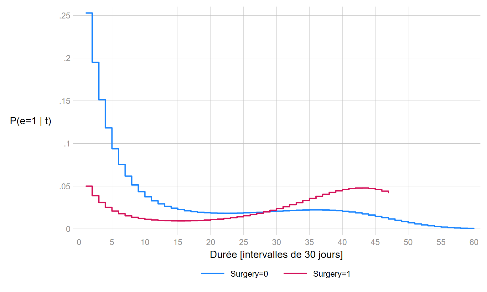

Modèles à temps discret
- On va principalement traité du modèle logistique à temps discret.
- Par définition ce n’est pas un modèle à risque proportionnel, mais à Odds proportionnels. Toutefois en situation de rareté, l’Odds converge vers une probabilité, qui est une mesure du risque (ici une probabilité conditionnelle).
- Le modèle à temps discret est de type paramétrique, il est moins contraignant que le modèle de Cox si l’hypothèse de proportionnalité n’est pas respectée, car le modèle est ajusté par une fonction de la durée.
- Formellement, le modèle est estimable avec des évènements mesurée à une durée nulle (même si cela n’a pas grand sens).
- La base de données doit être transformée en format long: aux temps d’observation ou sur des intervalles de temps.
- Permet d’introduire de manière plutôt souple un ensemble de covariables dynamiques.
Avec un lien logistique, le modèle à temps discret, avec seulement des covariables fixes, peut s’écrire:
\[log\left[\frac{P(Y=1 | t_p,X_k)}{1-P(Y=1 | t_p,X_k)}\right]= a_0 + \sum_{p}a_pf(t_p)+\sum_{k}b_kX_k\]
1 Organisation des données
1.1 Format long
Les données doivent être en format long: pour chaque individu on a une ligne par durée observé ou par intevalle de durées jusqu’à l’évènement ou la censure. On retrouve le système de splittage des données du modèle de Cox, mais généralisé à des intervalles où aucun évènement n’est observé. Avec des données de type discrète, classique en science sociale, il y a souvent peu de différence entre un allongement aux temps d’évènement et aux temps d’observation.
Warning: Si on construit des intervalles, on doit s’assurer qu’au moins un évènement s’est produit dans chaque intervalle, sinon problème de séparabilité parfaite.
1.2 Durée
La durée est dans un premier temps construite sous forme d’un simple compteur. La paramétrisation de la durée dans le modèle sera présentée par la suite.
1.3 Variable évènement/censure
Si l’individu a connu l’évènement, elle prend la valeur 0 avant celui-ci. Au moment de l’évènement sa valeur est égale à 1. Pour les observations censurées, la variable prend toujours la valeur 0.
Application On reprend les données de la base transplantation, mais les durées on été regroupées par période de 30 jours. Il n’y a pas de durée mesurée comme nulle, on a considéré que les 30 premiers jours représentaient le premier mois d’exposition. Cette variable de durée se nomme mois.
Format d’origine
> ion_m.dta", clear
+-----------------------------------------+
| id year age surgery mois died |
|-----------------------------------------|
| 1 67 30 0 2 1 |
+-----------------------------------------+Format long et variables pour l’analyse
running D:\Marc\SMS\FORMATIONS\2020\analyse duree Ined\analyse durees\profil> o ...
+-------------------------------------------------+
| id year age surgery mois died t e |
|-------------------------------------------------|
| 1 67 30 0 2 1 1 0 |
| 1 67 30 0 2 1 2 1 |
+-------------------------------------------------+2 Ajustement de la durée
Un des principaux enjeux réside dans la paramétrisation de la durée:
- Elle peut-être modélisée sous forme de fonction d’une variable de type continue.
- Elle peut-être modélisée comme variable discrete, de type indicatrice (0,1), sur tous les points d’observation, ou sous forme de regroupements (rappel: au moins un évènement observé dans chaque intervalle).
2.1 Ajustement avec une durée en continu
Le modèle étant paramétrique, on doit trouver une fonction qui ajuste le mieux les données. Toutes transformations de la variable est possible: \(f(t)=a\times t\), \(f(t)=a\times ln(t)\)……formes quadratiques. Les ajustements sous forme de splines tendent à se développer ces dernières années (recommandé).
Pour sélectionner cette fonction, on peut tester différents modèles sans covariable additionnelle, et sélectionner la forme qui minimise un critère d’information de type AIC ou BIC (vraisemblance pénalisée).
Exemple:
On va tester les paramétrisations suivante:s une forme linéraire stricte \(f(t)=a\times t\) et des effets quadratiques d’ordres 2 et 3: \(f(t)=a_1\times t + a_2\times t^{2}\) et \(f(t)=a_1\times t + a_2\times t^{2} + a_3\times t^{3}\).
Remarques:
- Les effets quadratiques consiste à introduires des intéractions entre une variable continue et elle même. Cela permet d’estimer des effets non linéaires.
- Attention aux effets quadratiques d’ordre >2: très sensible aux outliers. En analyse des durées en fin de la plage d’observation si peu de personnes restent soumises au risque, celui-ci peut-être surestimé.
Exemple Estimation des probabilités de décéder selon différents ajustements de la durée (modèle logistique à temps discret) 
Critères AIC
| \(f(t)\) | AIC |
|---|---|
| \(a\times t\) | 504 |
| \(a_1\times t + a_2\times t^{2}\) | 492 |
| \(a_1\times t + a_2\times t^{2} + a_3\times t^{3}\) | 486 |
On peut utiliser la troisième forme à savoir \(a_1\times t + a_2\times t^{2} + a_3\times t^{3}\).
Estimation du modèle avec toutes les covariables
running D:\Marc\SMS\FORMATIONS\2020\analyse duree Ined\analyse durees\profil> o ...
Logistic regression Number of obs = 1,127
LR chi2(6) = 90.69
Prob > chi2 = 0.0000
Log likelihood = -230.33671 Pseudo R2 = 0.1645
------------------------------------------------------------------------------
e | Coef. Std. Err. z P>|z| [95% Conf. Interval]
-------------+----------------------------------------------------------------
t | -.3720566 .0823946 -4.52 0.000 -.5335471 -.2105661
t2 | .0142379 .005023 2.83 0.005 .0043929 .0240828
t3 | -.0001659 .0000785 -2.11 0.035 -.0003198 -.000012
year | -.1326693 .0737755 -1.80 0.072 -.2772666 .011928
age | .0333413 .0146876 2.27 0.023 .0045541 .0621285
surgery | -1.010918 .448598 -2.25 0.024 -1.890154 -.1316821
_cons | 7.082657 5.307737 1.33 0.182 -3.320316 17.48563
------------------------------------------------------------------------------Estimation du modèle de Cox avec des durées mesurées sur une échelle de 30 jours
running D:\Marc\SMS\FORMATIONS\2020\analyse duree Ined\analyse durees\profil> o ...
Cox regression -- Efron method for ties
No. of subjects = 103 Number of obs = 103
No. of failures = 75
Time at risk = 1127
LR chi2(3) = 17.97
Log likelihood = -289.81242 Prob > chi2 = 0.0004
------------------------------------------------------------------------------
_t | Coef. Std. Err. z P>|z| [95% Conf. Interval]
-------------+----------------------------------------------------------------
year | -.1304397 .0674344 -1.93 0.053 -.2626087 .0017293
age | .0288141 .0134981 2.13 0.033 .0023583 .0552698
surgery | -.9695805 .4361069 -2.22 0.026 -1.824334 -.1148266
------------------------------------------------------------------------------Que remarquez-vous?
2.2 Ajustement discret
- Il s’agit d’introduire la variable de durée dans le modèle comme une variable catégorielle (factor).
- Pas conseillé si beaucoup de points d’observation, ce qui est le cas ici, et surtout si présence de points d’observation sans évènement.
- A l’inverse, si peu de points d’observation, la paramétrisation avec une durée continue n’est pas conseillé.
- La correction de la non proportionnalité peut être plus compliquée à réaliser (non traité).
On va supposer que l’on ne dispose que de 4 points d’observations. Pour l’exemple, on va créer ces points à partir des quartiles de la durée, et conserver pour chaque personne une seule observation par intervalle.
- 1: Entre le début de l’exposition et 4 mois.
- 2: Entre 5 mois et 11 mois .
- 3: Entre 12 mois et 23 mois.
- 4: 24 mois et plus.
On va estimer le risque globalement sur l’intervalle. La base sera plus courte que la précédente, on ne conserve qu’une ligne par intervalle d’exposition.
running D:\Marc\SMS\FORMATIONS\2020\analyse duree Ined\analyse durees\profil> o ...
(SAVASTATA created this dataset on 01AUG2019)
4 |
quantiles | e
of t | 0 1 | Total
-----------+----------------------+----------
1 | 50 53 | 103
2 | 35 11 | 46
3 | 27 5 | 32
4 | 10 6 | 16
-----------+----------------------+----------
Total | 122 75 | 197
Logistic regression Number of obs = 197
LR chi2(6) = 39.30
Prob > chi2 = 0.0000
Log likelihood = -111.23965 Pseudo R2 = 0.1501
------------------------------------------------------------------------------
e | Coef. Std. Err. z P>|z| [95% Conf. Interval]
-------------+----------------------------------------------------------------
ct4 |
2 | -1.033368 .4188719 -2.47 0.014 -1.854342 -.2123944
3 | -1.615245 .544858 -2.96 0.003 -2.683147 -.5473433
4 | -.4789305 .5992969 -0.80 0.424 -1.653531 .6956698
|
year | -.2032436 .0931956 -2.18 0.029 -.3859036 -.0205835
age | .0468518 .0184958 2.53 0.011 .0106006 .083103
surgery | -1.110163 .5025594 -2.21 0.027 -2.095161 -.1251644
_cons | 12.44666 6.653694 1.87 0.061 -.59434 25.48766
------------------------------------------------------------------------------Au niveau de l’interpretation, avec 37% d’évènements sur l’ensemble des observations, il n’est plus possible d’interpréter le modèle en terme de risque (probabilité). La lecture en termes d’Odds Ratio s’impose.
Probabilités estimées à partir d’un modèle avec la durée seulement.
Risques sur la longueur de l’intervalle.
| Durées | p |
|---|---|
| 0 à 4 mois | 0.51 |
| 4 à 11 mois | 0.24 |
| 11 à 23 mois | 0.16 |
| 23 à 61 mois | 0.37 |
2.3 Modèle à temps discret et hypothèse PH
Formellement un modèle logistique à temps discret repose sur une hypothèse d’Odds proportionnel (Odds ratios constants pendant la durée d’observation). Contrairement au modèle de Cox, l’estimation des probabilités (risque) n’est pas biaisée si l’hypothèse PH n’est pas respectée.
Comme pour le modèle de Cox, la correction de la non proportionalité peut se faire en intégrant une interaction avec la durée dans le modèle
On conseillera d’introduire l’intéraction sur un modèle avec une variable de durée traitée de manière continue.
Les variables year et age seront omises pour faciliter la représentation graphique.
running D:\Marc\SMS\FORMATIONS\2020\analyse duree Ined\analyse durees\profil> o ...
Logistic regression Number of obs = 1,127
LR chi2(5) = 84.78
Prob > chi2 = 0.0000
Log likelihood = -233.29204 Pseudo R2 = 0.1538
------------------------------------------------------------------------------
e | Coef. Std. Err. z P>|z| [95% Conf. Interval]
-------------+----------------------------------------------------------------
t | -.373826 .083913 -4.45 0.000 -.5382924 -.2093595
1.surgery | -1.929061 .6920142 -2.79 0.005 -3.285383 -.5727377
|
surgery#c.t |
1 | .0690069 .0333128 2.07 0.038 .003715 .1342987
|
t2 | .0137676 .0052405 2.63 0.009 .0034964 .0240388
t3 | -.0001596 .0000828 -1.93 0.054 -.0003218 2.62e-06
_cons | -.723378 .2445386 -2.96 0.003 -1.202665 -.2440911
------------------------------------------------------------------------------